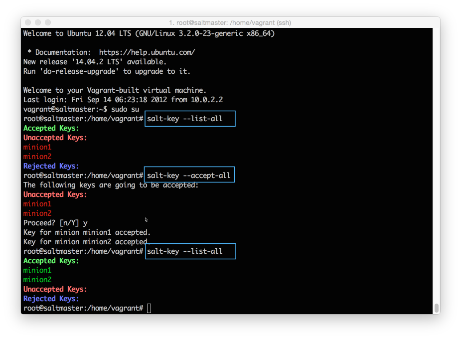

Install SaltStack
You'll learn how to:
- Install SaltStack
- View and accept connections from managed systems
- Send a test command to all managed systems
Estimated time: 10 minutes
Difficulty:
To install SaltStack, you’ll need a detailed network diagram with your complete DNS mappings, an enterprise database server, and yeah, you don’t need any of that stuff. All you need is a way to install packages on your systems, and about 10 minutes.
You can install SaltStack from a package manager, pip, directly from source, or using a bootstrap script. SaltStack also provides dedicated tools to create machines and install Salt on public and private clouds (salt-cloud and salt-virt). We won't cover those tools here, but just know that as soon as you have a system under management, SaltStack is used the same across physical, cloud, and virtual resources.
Install
If you used the Vagrant project that is linked in the previous section, SaltStack is already installed and you can continue to the Accept Connections section. If you are using a different environment, the simplest way to install SaltStack is using the bootstrap script. This script installs SaltStack with a couple of commands on most operating systems. Show me how to install!
Accept Connections
Each connection between the Salt Master and Salt Minion is managed and secured using cryptographic keys. After installation, each Salt Minion sends its public key to the Salt Master, where it eagerly waits to be accepted. Salt Minion keys must be accepted before systems accept commands from the Salt Master.
At the command prompt, cd into the vagrant-demo-master folder and run the following command to log in to your Salt Master:
vagrant ssh master
After you connect, run the following command to become the root user:
sudo su

View all keys
On the Salt Master, you can quickly view all Salt Minion connections and view whether the connection is accepted, rejected, or pending.
salt-key --list-all
Accept a specific key
Before a Salt Minion can connect, you must accept its key.
salt-key --accept=<key>
Accept all keys
salt-key --accept-all
Send a Command
After you have accepted each key, send a command from your Salt Master to verify that your Salt Minions are listening:
salt '*' test.ping

If you don't see all of your Salt Minions respond, well that is what happens when you set things up manually. You probably typed something wrong, didn't accept some keys, or forgot to add a space somewhere (#soml). After your Salt Minions are all responding, continue to the next section to put SaltStack to work.